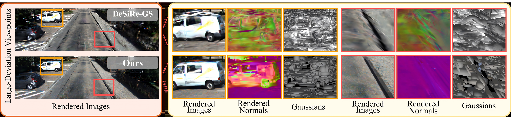
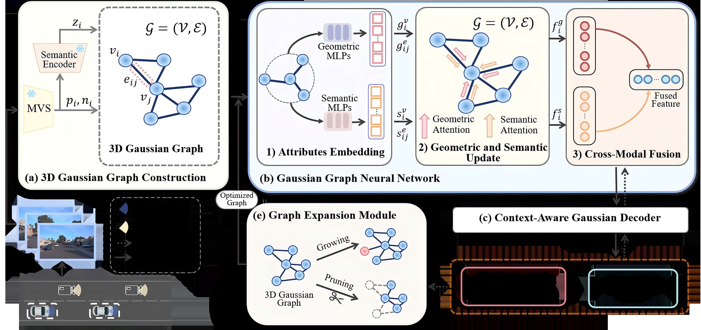
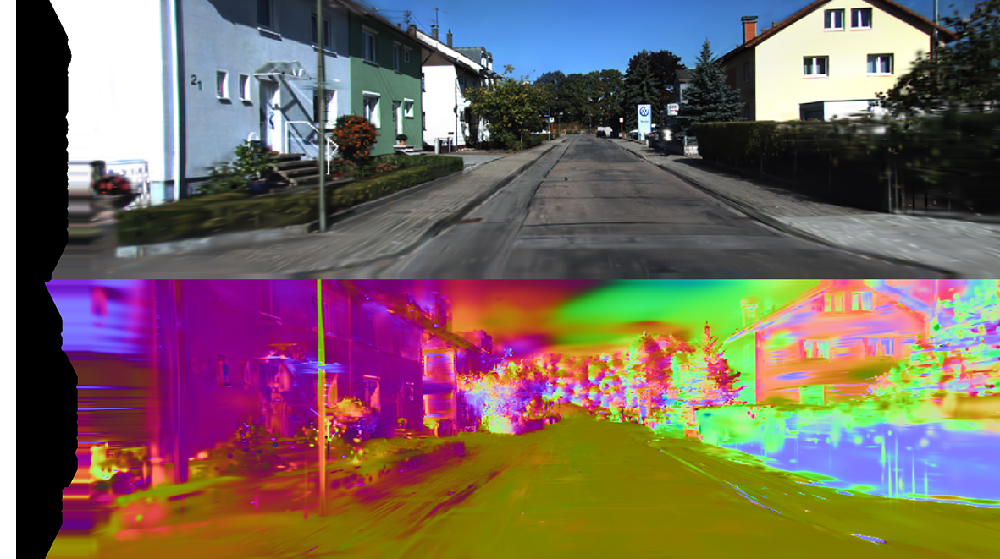
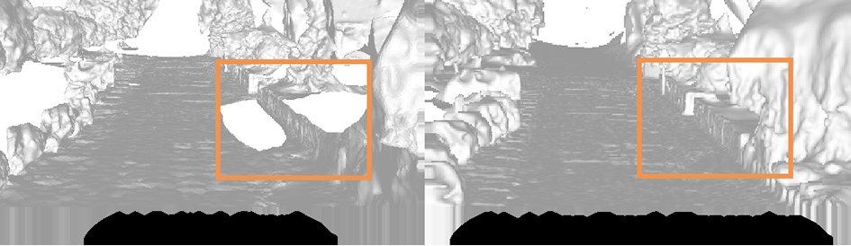
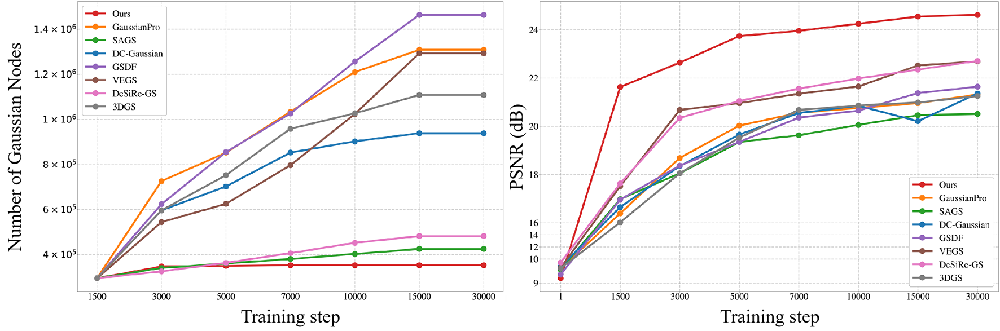
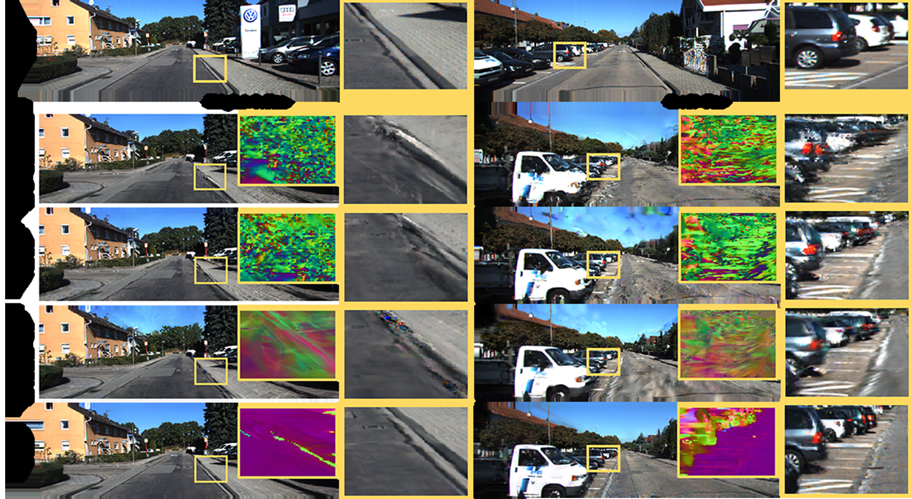
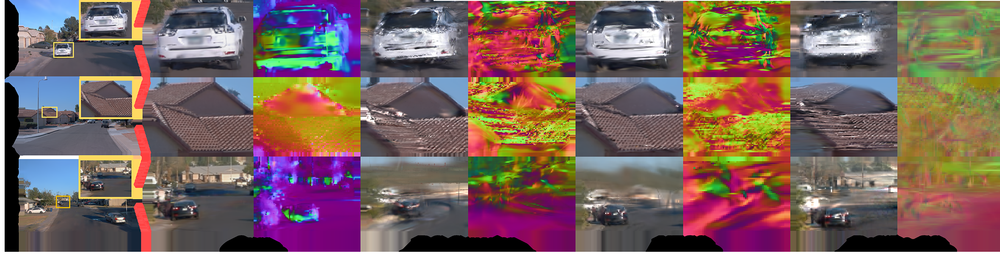
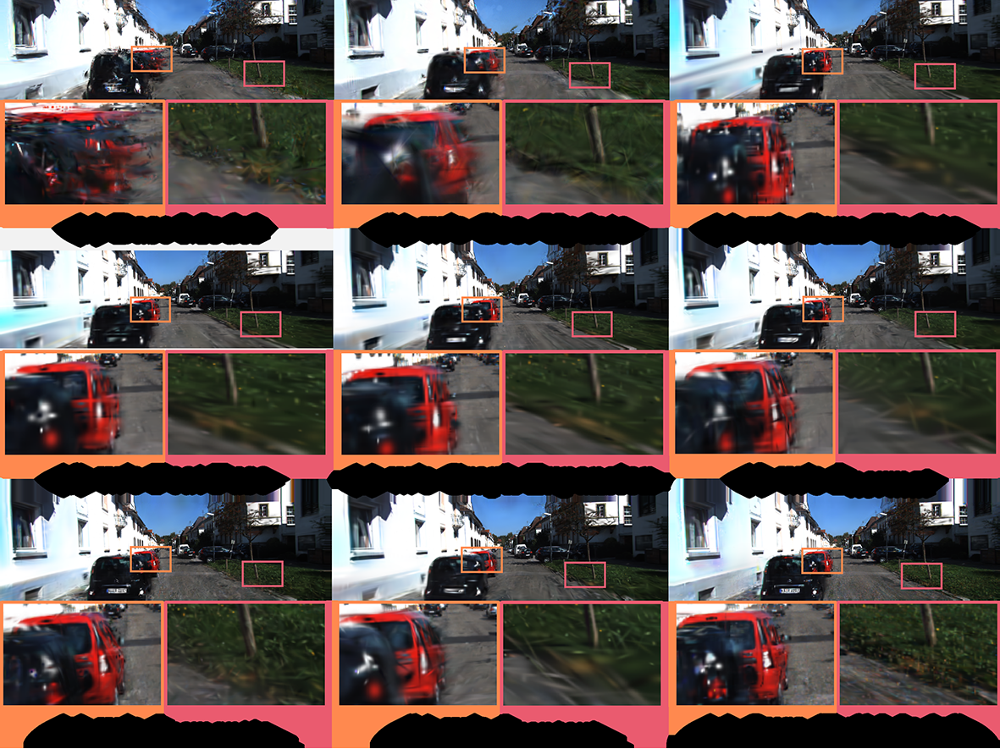

一句话概括:城市单轨迹训练的 3DGS 在大偏移视角(变道横移 0.5–5m、地面→抬高 1–2m)下会因高斯被当作独立基元而几何崩坏。CoRoGS(Context-aware Robust Gaussian Splatting)把 3DGS 重构成上下文表示:在 MVS 点云 Delaunay 三角化得到的 3D 高斯图上跑一个几何/语义双路图神经网络(Gaussian GNN),让每个高斯聚合邻域的几何与语义上下文后再解码参数,并用语义加权的上下文平滑损失(等价 MRF)+ 梯度驱动的图扩展(生长/剪枝)保持大偏移下的结构一致性。

自动驾驶与低空航拍感知中,训练视图通常来自单条行车轨迹,而测试时需要外推到轨迹外视角:超车变道的横向偏移(lane-level lateral deviation)、地面行车视角到航拍视角的跨层过渡(cross-level transition)。稀疏视角 3DGS 方法能在轨迹内插值,但外推到未观测区域时出现几何不一致与外观退化(论文 §1)。
代表:DNGaussian、GSDF(估计深度图/LiDAR 先验对齐高斯中心)。
失败模式:把每个高斯当独立基元,深度先验只约束单点位置;未观测区域的几何偏差逐点累积,过拟合训练视角,大偏移下高斯空间形变(论文 §1 图 1 右)。
代表:GaussianPro、DC-Gaussian、DeSiRe-GS(优化高斯朝向贴合表面法向)。
失败模式:同样是逐基元局部正则,缺少高斯间依赖的显式建模;大偏移下法向方向互相矛盾,结构约束缺失导致整体几何崩坏(论文 §1)。
代表:VEGS(扩散先验补全稀疏视角)、SAGS(空间邻近建图)。
失败模式:VEGS 依赖相机覆盖有限的生成模型且训练成本高(论文 §2);SAGS 的启发式生长引入冗余基元、抓不住细粒度依赖,效率与可扩展性受限;已有图方法(如 GGN)建在物体级或视角级,不是高斯级(论文 §2)。
输入:单轨迹多视角 RGB 图像(训练视图,如 KITTI 左目序列)+ SfM 相机位姿;测试时为目标偏移视角的相机位姿。输出:偏移视角的渲染图像、法向图、语义图。场景表示为 3D 高斯图 $\mathcal{G}=(\mathcal{V},\mathcal{E})$,每个节点解码出 $N$ 个(实际取 3)3D 高斯 $\{(\mathbf{s}_v,\mathbf{q}_v,\alpha_v,\mathbf{c}_v)\}$。
| 符号 | 含义 | 形状 / 取值 |
|---|---|---|
| $g_i,\ \phi_i$ | 第 $i$ 个高斯及其参数 $\{\mathbf{p}_i,\mathbf{s}_i,\mathbf{c}_i,\mathbf{q}_i,\alpha_i\}$(位置/缩放/颜色/旋转/不透明度) | $\mathbf{p}_i,\mathbf{s}_i,\mathbf{c}_i\in\mathbb{R}^3$;$\mathbf{q}_i\in\mathbb{R}^4$;$\alpha_i\in\mathbb{R}$ |
| $\hat{\phi}_i,\ \mathcal{C}_i$ | 上下文更新后的表示与邻域聚合上下文(式 1) | $\mathcal{C}_i=\Psi(\{\phi_j\mid j\in\mathcal{N}(i)\})$ |
| $\mathcal{G}=(\mathcal{V},\mathcal{E})$ | 3D 高斯图(MVS 点云 Delaunay 三角化) | $N$ 个节点;Delaunay 边数约 $1.5N$(补充材料 B.1) |
| $v_i=\{\mathbf{p}_i,\mathbf{n}_i,\mathbf{z}_i\}$ | 节点属性:位置 / 表面法向 / 语义特征 | $\mathbf{p}_i,\mathbf{n}_i\in\mathbb{R}^3$;$\mathbf{z}_i\in\mathbb{R}^{d_s}$,由 PointNet++ 编码器 $f_\Theta$ 给出(式 3) |
| $\mathbf{e}^g_{ij},\ e^s_{ij}$ | 边的几何属性(法向余弦+欧氏距离)与语义属性(语义余弦) | $\mathbf{e}^g_{ij}\in\mathbb{R}^2$(式 4);$e^s_{ij}\in\mathbb{R}$ |
| $\mathbf{g}^v_i,\ \mathbf{s}^v_i$ / $\mathbf{g}^e_{ij},\ \mathbf{s}^e_{ij}$ | 节点 / 边的几何与语义嵌入(式 5-6) | Fourier 编码 + 两层 MLP(hidden 32) |
| $\tilde{\mathbf{g}}^e_{ij},\ \tilde{\mathbf{s}}^e_{ij}$ | 边更新后的几何/语义特征(式 7) | 拼接 $[\mathbf{e},\mathbf{v}_i,\mathbf{v}_j]$ 过 $\mathcal{M}_{\text{edge}}$ |
| $\mathbf{f}^g_i,\ \mathbf{f}^s_i$ | 注意力聚合后的节点几何/语义特征(式 8) | GAT 式聚合 [29] |
| $\mathbf{q}^g_i,\ \mathbf{q}^s_i$ | 跨模态投影特征 $\mathbf{q}^g_i=\mathbf{W}_g\mathbf{f}^g_i$ | 共享隐空间 |
| $\eta_i,\ \mathbf{z}^o_i$ | 可学习门控与融合特征(式 10) | $\eta_i=\sigma(\mathbf{W}_\eta[\tilde{\mathbf{f}}^g_i\Vert\tilde{\mathbf{f}}^s_i])$;$\mathbf{z}^o_i\in\mathbb{R}^{32}$(补充 A.3) |
| $L,\ N$ | 几何/语义更新重复次数;每节点解码高斯数 | $L{=}2$;$N{=}3$(补充 A.1) |
| $\varepsilon_g,\ \tau_g,\ \lambda_b,\ \beta(\mathbf{p}_i)$ | 图扩展生长准则 / 阈值 / 边界调制权重 / 边界指示器 | $\tau_g{=}2{\times}10^{-4}$;$\lambda_b{=}0.2$;$\beta\in\{0,1\}$(补充 A.6) |
| $w_{a,b},\ \sigma_s$ | 上下文损失的语义相似度权重与带宽(式 12) | $w_{a,b}=\exp(-\|s_a-s_b\|_2^2/2\sigma_s^2)$;$\sigma_s$ 论文未给值⚠️【待核实】 |

传统 3DGS 把每个高斯独立参数化为 $\phi_i=\{\mathbf{p}_i,\mathbf{s}_i,\mathbf{c}_i,\mathbf{q}_i,\alpha_i\}$。CoRoGS 把更新改写为上下文条件的函数(论文 Eq.1):
其中 $\mathcal{N}(i)$ 是 $g_i$ 的邻居,$\Psi$ 是上下文聚合算子,$\Phi$ 把上下文特征融合进更新后的表示 $\hat{\phi}_i$。配套的结构一致性约束(论文 Eq.2):
$w_{ij}$ 度量高斯 $i,j$ 间的几何与语义亲和强度。论文明确指出该能量函数类比马尔可夫随机场(MRF):每个节点只与局部邻居交互,全局一致性从局部消息传播中涌现;同质区域强制平滑,语义边界允许不连续(§3.2)。实际实现时式 2 落在渲染法向图上(见 §7 式 11)。
| 步骤 | 输入 | 算子 | 输出 |
|---|---|---|---|
| 稠密重建 | 多视角图像 + SfM 位姿/稀疏点云 | 传统 MVS(Vu et al. TPAMI 2011 [31]) | 稠密点云(补充 A.2) |
| 三角化 | MVS 点云 | Delaunay 三角化(空外接球 + 最大角准则) | 三角网格:顶点=高斯节点,边=空间连接,约 $1.5N$ 条边(补充 B.1) |
| 法向估计 | 三角面片 | 面法向=边叉积,再插值到顶点 | 顶点法向 $\mathbf{n}_i\in\mathbb{R}^3$(补充 A.2) |
| 语义属性 | $(\mathbf{p}_i,\mathbf{n}_i)$ | 编码器 $f_\Theta$(PointNet++ [22]) | $\mathbf{z}_i\in\mathbb{R}^{d_s}$(式 3) |
| 边属性 | 节点对 $(i,j)$ | 几何:法向余弦+欧氏距离;语义:语义余弦 | $\mathbf{e}^g_{ij}\in\mathbb{R}^2$,$e^s_{ij}\in\mathbb{R}$(式 4) |
本模块无直接监督——图结构由几何算法(MVS+Delaunay)生成,不经梯度优化;梯度只通过后续的节点/边特征与解码高斯参数流动。这也意味着图拓扑的误差(MVS 空洞、法向噪声)只能靠图扩展模块事后修补(见 §8 与 §16 改进方向)。
GNN 实现式 1 中的 $\Phi$,由三个子模块组成:属性嵌入 → 几何/语义双路更新 → 跨模态融合。
| 子模块 | 输入 | 算子 | 输出 |
|---|---|---|---|
| ① 属性嵌入 | 节点 $[\psi(\mathbf{p}_i),\psi(\mathbf{n}_i)]$ / $\mathbf{z}_i$;边 $\psi(\mathbf{e}^g_{ij})$ / $\psi(\mathbf{e}^s_{ij})$ | Fourier 位置编码(位置 6 阶、法向 10 阶)+ 两层 MLP(hidden 32)(补充 A.1) | $\mathbf{g}^v_i,\mathbf{s}^v_i,\mathbf{g}^e_{ij},\mathbf{s}^e_{ij}$(式 5-6) |
| ② 几何/语义更新(重复 $L{=}2$ 次) | $\mathbf{g}^e_{ij},\mathbf{g}^v_i,\mathbf{g}^v_j$ | 先更新边:$\mathcal{M}_{\text{edge}}([\mathbf{e}_{ij},\mathbf{v}_i,\mathbf{v}_j])$(式 7);再注意力聚合到节点(式 8) | $\mathbf{f}^g_i,\mathbf{f}^s_i$ |
| ③ 跨模态融合 | $\mathbf{f}^g_i,\mathbf{f}^s_i$ | 投影 $\mathbf{W}_g,\mathbf{W}_s$ → 交叉注意力(式 9)→ 门控加权(式 10) | $\mathbf{z}^o_i\in\mathbb{R}^{32}$(补充 A.3) |
GNN 参数量(补充 B.2 消融):$L{=}1$ 时 0.45MB,$L{=}2$ 时 0.96MB,$L{=}3$ 时 1.42MB——非常轻量,计算瓶颈不在参数量而在消息传递的边遍历。
① 属性嵌入(论文 Eq.5-6):$\psi(\cdot)$ 为 Fourier 位置编码,$\mathcal{M}^{g,s}_v,\mathcal{M}^{g,s}_e$ 均为两层 MLP:
② 几何/语义更新——先边后节点的两步聚合(论文 Eq.7-8):
$\mathrm{Attn}(\cdot)$ 为注意力聚合(GAT [29])。「先更新边、再聚合到节点」让每条边先编码两端节点的成对关系,节点再按注意力挑取相关邻居——比直接把邻居特征平均更能保留边界结构。
③ 跨模态融合(论文 Eq.9-10):几何与语义特征先各自投影到共享隐空间 $\mathbf{q}^g_i=\mathbf{W}_g\mathbf{f}^g_i$,$\mathbf{q}^s_i=\mathbf{W}_s\mathbf{f}^s_i$,再做双向交叉注意力:
注意力权重 $\alpha^{g\to s}_{ik},\alpha^{s\to g}_{ik}$ 由相似度分数的 softmax 给出;门控 $\eta_i$ 逐节点自适应平衡「几何细节」与「语义一致」。设计动机(§3.4.3):语义相似的节点几何可能不同(两辆不同的车),几何相近的节点语义可能不同(车与路面交界)——单模态更新无法建模这种跨模态依赖。

本模块无独立损失,通过下游渲染损失($\mathcal{L}_1$、$\mathcal{L}_{\text{D-SSIM}}$、$\mathcal{L}_{\text{normal}}$、$\mathcal{L}_{\text{semantic}}$)与上下文平滑损失($\mathcal{L}_{\text{context}}$)端到端训练。消融(主文表 3)显示三路缺一不可:去几何更新 -1.71 dB、去语义更新 -1.27 dB、融合换简单拼接 -1.03 dB(详见 §13)。
解码器把融合后的节点特征 $\mathbf{z}^o_i$ 翻译成可直接光栅化的 3D 高斯属性。关键设计:每个融合特征预测 $N$ 个高斯的参数(论文设 $N=3$,补充 A.1),思路借鉴 Scaffold-GS [17] 的「锚点 → 多神经高斯」结构,用少量图节点支撑更丰富的细节表达。
其中 $\psi(\mathbf{d})$ 为视角方向的 Fourier 位置编码(使颜色具备视角相关性);输出:尺度 $\mathbf{s}_v\in\mathbb{R}^3$、旋转四元数 $\mathbf{q}_v\in\mathbb{R}^4$、不透明度 $\alpha_v\in\mathbb{R}$、RGB 颜色 $\mathbf{c}_v\in\mathbb{R}^3$。这些属性走标准 3DGS α-混合光栅化,可渲染图像、法向图、语义图三种输出。
直接接受渲染端全部损失($\mathcal{L}_1$、$\mathcal{L}_{\text{D-SSIM}}$、$\mathcal{L}_{\text{normal}}$、$\mathcal{L}_{\text{semantic}}$)的梯度;同时作为「每节点 → 多高斯」的放大器,把图节点数与渲染高斯数解耦——这也是 CoRoGS 高斯总量最少却质量最高的原因之一(见 §12)。
前三模块把「上下文」建进了特征,本模块把「上下文」建进损失:要求语义一致的区域法向平滑,语义跨边界的区域允许突变——一个由语义相似度门控的法向平滑正则。
$\mathcal{N}$ 为渲染法向图(按 [2] 方法渲染),$s_i$ 为渲染语义图上像素 $i$ 的类别概率。式 13 的高斯核让权重随语义差异指数衰减。
相邻像素同属一个语义区域(如整块路面)时 $w_{a,b}\to 1$,法向差被强力惩罚 → 全局几何一致,抑制大偏移视角下的法向碎裂。
相邻像素跨越语义边界(车辆-路面交界)时 $w_{a,b}\to 0$,约束自动放松 → 保留物体边缘的几何锐度,避免边界被抹平。
本模块本身就是损失,作用于渲染法向图与渲染语义图,梯度经法向渲染路径回传到高斯旋转/尺度参数与 GNN/解码器。语义端依赖 LSeg [10] 的离线伪标签(经 $\mathcal{L}_{\text{semantic}}$ 训练语义渲染头),因此整体语义质量受 LSeg 上限约束(见 §16 局限分析)。
MVS 初始化的高斯图存在空洞(遮挡、弱纹理)。图扩展机制在训练中梯度驱动地监测边界高斯,只在大偏移渲染暴露出结构缺失处插入新高斯,并用 Delaunay 距离约束防止过度膨胀。
边界指示符 $\beta(p_i)$:若节点 $v_i$ 的任一关联边只属于一个三角形(而非内部边的两个),则标记为边界节点——这类节点通常对应结构不连续/几何缺失区域。边界调制项放大边界高斯的梯度信号,使其更容易触发分裂。当 $\varepsilon_g$ 超过阈值 $\tau_g=2\times10^{-4}$ 时生成新节点,形成候选集 $\mathcal{P}$。
训练前 1,500 次迭代做初始自适应训练;此后每 100 次迭代执行一次图扩展,直至第 15,000 次迭代;总训练 30,000 次迭代。即扩展集中在训练前半段,后半段纯参数精调。

扩展准则本身由渲染损失的梯度 $\nabla g$ 驱动(无额外损失项);边界调制项 $\lambda_b\beta(p_i)\nabla g$ 是图拓扑对梯度流的先验加权。消融(表 3(e))显示去掉扩展 PSNR 掉 0.93 dB、FID 恶化约 21.1(详见 §13)。
| 损失项 | 定义 | 监督对象 | 权重(补充 A.1) | 去除影响(表 3) |
|---|---|---|---|---|
| $\mathcal{L}_1$ | 光度重建 L1 | 渲染 RGB vs GT | 1.0(基准项) | —(不可去除) |
| $\mathcal{L}_{\text{D-SSIM}}$ | D-SSIM,沿用 3DGS [8] | 渲染 RGB vs GT | $\lambda_D=0.8$ | —(未单独消融) |
| $\mathcal{L}_{\text{normal}}$ | 渲染法向 vs Omnidata [3] 伪 GT 法向 | 几何对齐 | $\lambda_N=0.5$ | PSNR −1.11 dB |
| $\mathcal{L}_{\text{semantic}}$ | 渲染语义图 vs LSeg [10] 伪标签的交叉熵 | 语义对齐 | $\lambda_S=0.2$ | PSNR −1.17 dB |
| $\mathcal{L}_{\text{context}}$ | 语义门控法向平滑(式 12-13) | 上下文几何一致性 | $\lambda_C=0.5$ | PSNR −1.64 dB(影响最大) |
推理时 GNN 特征可预计算缓存(不随视角变化),每帧仅需解码器 + 光栅化;但实测 49 FPS(表 1)低于多数基线——解码器每节点 3 高斯的放大也增加了光栅化负担(见 §15 落地分析)。
| 项目 | 取值 |
|---|---|
| 总迭代数 | 30,000(所有场景统一) |
| 图扩展调度 | 1,500 次迭代后开始,每 100 次迭代一次,至 15,000 次迭代结束 |
| 嵌入 MLP | 2 层,hidden dim 32 |
| Fourier 位置编码 | 位置 6 阶、法向 10 阶 |
| GNN 更新轮数 $L$ | 2(消融见 §13:L=3 增益边际且 FID 变差) |
| 每融合特征预测高斯数 $N$ | 3 |
| 边界调制权重 $\lambda_b$ | 0.2 |
| 生长阈值 $\tau_g$ | $2\times10^{-4}$ |
| 损失权重 | $\lambda_D=0.8,\ \lambda_N=0.5,\ \lambda_S=0.2,\ \lambda_C=0.5$ |
| 硬件 / 框架 | 单卡 NVIDIA RTX A6000,PyTorch |
| 优化器 / 学习率 / batch | 【待核实】论文与补充材料均未披露 |
融合特征 $\mathbf{z}^o_i\in\mathbb{R}^{32}$ 经 MLP 解码为 16 维语义向量(对齐 LSeg 类别数),在 α-混合管线中替换 RGB 渲染语义图;通道维度可换成其他基础模型(如 DINO)的特征维度。
补充材料报告了训练过程中 PSNR 与高斯节点数的变化曲线:

| 方法 | PSNR↑ | SSIM↑ | LPIPS↓ | CD↓ | FPS↑ | #GS(k)↓ |
|---|---|---|---|---|---|---|
| GaussianPro | 21.32 | 0.703 | 0.271 | 2.28 | 109 | 1308 |
| SAGS | 20.51 | 0.692 | 0.316 | 2.41 | 110 | 425 |
| DC-Gaussian | 21.36 | 0.705 | 0.265 | 2.02 | 98 | 938 |
| GSDF | 21.64 | 0.692 | 0.256 | 2.48 | 102 | 1463 |
| VEGS | 21.85 | 0.699 | 0.275 | 2.31 | 108 | 1293 |
| DeSiRe-GS | 22.71 | 0.765 | 0.248 | 1.88 | 41 | 482 |
| CoRoGS | 24.96 | 0.849 | 0.180 | 1.32 | 49 | 353 |
| 方法 | Left-3m | Up-1m | Diagonal-3m | |||
|---|---|---|---|---|---|---|
| KID↓ | FID↓ | KID↓ | FID↓ | KID↓ | FID↓ | |
| GaussianPro | 119.99 | 0.0566 | 99.16 | 0.0503 | 134.23 | 0.0791 |
| SAGS | 105.77 | 0.0631 | 107.16 | 0.0627 | 133.03 | 0.0807 |
| DC-Gaussian | 115.48 | 0.0514 | 94.95 | 0.0445 | 135.93 | 0.0786 |
| GSDF | 115.09 | 0.0506 | 96.04 | 0.0491 | 145.38 | 0.0829 |
| VEGS | 119.06 | 0.0701 | 108.45 | 0.0636 | 135.09 | 0.0801 |
| DeSiRe-GS | 104.79 | 0.0480 | 102.26 | 0.0479 | 147.87 | 0.0820 |
| CoRoGS | 67.12 | 0.0249 | 72.71 | 0.0333 | 107.77 | 0.0413 |
| 方法 | Left-5m | Up-2m | Diagonal-5m | |||
|---|---|---|---|---|---|---|
| KID↓ | FID↓ | KID↓ | FID↓ | KID↓ | FID↓ | |
| GaussianPro | 139.39 | 0.1034 | 167.49 | 0.1501 | 180.03 | 0.1250 |
| SAGS | 133.84 | 0.0819 | 175.94 | 0.1543 | 176.13 | 0.1180 |
| DC-Gaussian | 132.52 | 0.0911 | 166.42 | 0.1621 | 169.09 | 0.1193 |
| GSDF | 145.42 | 0.1133 | 165.36 | 0.1647 | 172.96 | 0.1100 |
| VEGS | 143.08 | 0.1089 | 169.04 | 0.1638 | 173.74 | 0.1133 |
| DeSiRe-GS | 143.28 | 0.0959 | 172.14 | 0.1592 | 175.09 | 0.1117 |
| CoRoGS | 89.15 | 0.0378 | 119.19 | 0.0872 | 133.50 | 0.1022 |
极端偏移下对最强基线 DC-Gaussian 的 FID 改善:Left-5m 32.72%、Up-2m 28.38%、Diagonal-5m 21.04%;六种偏移设置全部第一。分数据集细表(KITTI 补充表 3 / Waymo 补充表 4)趋势一致。


评测设置:Right-0.5m 用 PSNR/SSIM/LPIPS,Left-3m 用 FID。
| Case | 配置 | PSNR↑ | SSIM↑ | LPIPS↓ | FID↓ | ΔPSNR |
|---|---|---|---|---|---|---|
| (a) | Base Model(无上下文框架) | 21.25 | 0.6889 | 0.2691 | 123.80 | −3.71 |
| (b) | w/o 几何更新(§3.4.2) | 23.25 | 0.7963 | 0.1985 | 83.62 | −1.71 |
| (c) | w/o 语义更新(§3.4.2) | 23.69 | 0.7826 | 0.1936 | 86.93 | −1.27 |
| (d) | w/o 跨模态融合(简单拼接) | 23.93 | 0.8026 | 0.1965 | 86.34 | −1.03 |
| (e) | w/o 图扩展(§3.7) | 24.03 | 0.8136 | 0.1902 | 89.36 | −0.93 |
| (f) | w/o $\mathcal{L}_{\text{normal}}$ | 23.85 | 0.8025 | 0.1928 | 79.68 | −1.11 |
| (g) | w/o $\mathcal{L}_{\text{semantic}}$ | 23.79 | 0.7963 | 0.1949 | 82.96 | −1.17 |
| (h) | w/o $\mathcal{L}_{\text{context}}$ | 23.32 | 0.7935 | 0.1905 | 89.65 | −1.64 |
| (n) | 完整模型 | 24.96 | 0.8492 | 0.1805 | 68.25 | — |
结论:全部 8 个组件都有正贡献。影响排序:几何更新(−1.71)> $\mathcal{L}_{\text{context}}$(−1.64)> 语义更新(−1.27)≈ $\mathcal{L}_{\text{semantic}}$(−1.17)> $\mathcal{L}_{\text{normal}}$(−1.11)> 跨模态融合(−1.03)> 图扩展(−0.93)。大偏移指标 FID 上,几何更新与 $\mathcal{L}_{\text{context}}$ 的缺失同样恶化最严重。

| 构边策略 | PSNR↑ | SSIM↑ | LPIPS↓ | FID↓ |
|---|---|---|---|---|
| Ours + KNN Graph | 22.03 | 0.7159 | 0.2008 | 90.36 |
| Ours(Delaunay) | 24.96 | 0.8492 | 0.1805 | 67.12 |
KNN 构图 PSNR 掉 2.93 dB。原因:(i) KNN 仅按欧氏距离连边,常把不同语义区域、法向迥异的高斯连到一起,误导特征聚合;(ii) KNN 强制每节点固定 $K$ 条边(约 $K{\times}N$ 条),Delaunay 去除重复/无效连接后仅约 $1.5N$ 条边,更稀疏且保留有效传播路径。
| 层数 $L$ | PSNR↑ | SSIM↑ | LPIPS↓ | FID↓ | 参数量 |
|---|---|---|---|---|---|
| 1 | 24.32 | 0.8165 | 0.1828 | 79.68 | 0.45 MB |
| 2 | 24.96 | 0.8492 | 0.1805 | 67.12 | 0.96 MB |
| 3 | 25.28 | 0.8529 | 0.1796 | 73.25 | 1.42 MB |
1→2 层:PSNR +0.64 dB、FID −12.56,收益显著;2→3 层:PSNR 仅 +0.32 dB 且 FID 反而变差(67.12→73.25),参数增 48%——边际收益递减并出现过拟合迹象,故选 $L{=}2$。
| 方法 | 核心思路 | 高斯间关系 | 大偏移机制 | 相对 CoRoGS 的短板 |
|---|---|---|---|---|
| GaussianPro [2] | 渐进式传播 + 多视图几何先验 | 独立优化 | 几何一致性约束 | 无高斯间上下文建模,大偏移 FID 明显更差 |
| SAGS [30] | 结构感知 3DGS | 局部结构约束 | — | 结构先验停留在局部,PSNR/FID 全面落后 |
| DC-Gaussian [32] | 多视图几何先验(行车记录场景) | 独立优化 | 几何误差修正 | 大偏移最强基线,仍被超 21%~33% FID |
| GSDF [39] | 3DGS + SDF 表面对齐 | 隐式(共享表面) | 表面约束 | 几何更准但渲染指标平庸,无显式上下文 |
| VEGS [7] | 扩散先验补全新视角 | 独立优化 | 生成式先验 | 依赖外部扩散模型,伪影明显(Fig.3/4) |
| DeSiRe-GS [21] | 静动态分解 + 表面重建 | 独立优化 | 表面正则 | 小偏移第二名,大偏移优势消失 |
| CoRoGS | 图神经网络显式建模高斯依赖 | 显式图上下文(几何+语义) | 上下文推理 + 图扩展 | — |
训练-测试视角偏差(左目训练右目评测、横向/垂直偏移)正是车载多摄像头布局与 corner case 生成的核心痛点。CoRoGS 在大偏移下的 FID/KID 优势直接对应仿真器里「合成罕见视角」的能力。
论文结论明确点名 low-altitude aerial perception。无人机巡检/测绘中航线偏移常见,图结构上下文对大范围静态场景尤其适配。
KITTI/Waymo 均为城市街景。353k 高斯的低存储 + Delaunay 稀疏图边(约 1.5N)使大规模场景的存储与传输成本可控。
| 方向 | 现状痛点 | 可行路径 |
|---|---|---|
| 动态场景扩展 | 论文承认对动态物体处理有限(§5 Conclusion) | 将图节点扩展为时变高斯场,边特征编码时间相关性;或与 DrivingGaussian 式静动态分解组合 |
| 旋转大偏移 | 结论承认大旋转仍是局限 | 引入 rotation-aware 结构约束(如 SE(3)-等变 GNN 边特征),缓解当前仅平移偏移评测的盲区 |
| 伪标签依赖 | 法向/语义监督来自 Omnidata/LSeg,上限被锁死 | 换用更强基础模型(DINOv2、SAM),或引入自监督几何一致性替代伪标签 |
| MVS 初始化空洞 | 初始图质量依赖传统 MVS,弱纹理区域先天不足 | 用前馈稠密重建(MASt3R、MV-DUSt3R+ [28])替代 MVS,或用扩散先验直接补全初始点云 |
| 速度 | 49 FPS,低于部分基线(98-110) | 解码器剪枝(每节点动态 N)、图节点 LOD(参考 Octree-GS [24])、烘焙缓存供实时回放 |
| 图拓扑学习 | 图结构由几何算法固定,不可微 | 探索可微图学习(如 GNN 边权重联合优化、神经 Delaunay),让拓扑随训练演化 |
| 开源与复现 | 代码未开源,关键训练细节缺失 | 社区复现阶段优先补齐优化器/学习率/数据划分细节 |
CoRoGS 把 3D 高斯从「独立优化的基元」改造为「图上的上下文推理对象」:用 Delaunay 图承载高斯间依赖,用几何/语义双路 GNN + 跨模态门控融合做特征推理,用语义门控法向平滑损失做监督,用梯度驱动的图扩展补全结构——在 KITTI/Waymo 大偏移视角合成上实现 PSNR +2.25 dB、FID 最高 -32.7% 的显著优势,且高斯数最少(353k)。
在 3DGS 技术谱系里,CoRoGS 的贡献不是某个模块的堆叠,而是关系建模范式的显式化:此前方法对高斯间关系的处理停留在隐式正则(SDF 对齐、传播约束),CoRoGS 首次把图结构作为一等公民,让上下文推理成为可学习、可消融、可扩展的组件。这与 Scaffold-GS 的「结构化」、GGS [40] 的「图网络泛化」同属结构觉醒一脉,但 CoRoGS 选择了 per-scene 优化下最彻底的图化路径。
| 作者 | 角色 / 机构 |
|---|---|
| Xin Ma | 第一作者,北京邮电大学(AAAI 2025 同主题前作 [18] 第一作者) |
| Peng Lu | 通讯作者,北京邮电大学 |
| Yisong Chen | 北京大学 |
| Chengwei Pan | 北京航空航天大学 |
| Sheng Li | 北京大学 |
团队延续性:Xin Ma 与 Peng Lu、Chengwei Pan 此前在 AAAI 2025 发表《Novel View Synthesis under Large-Deviation Viewpoint for Autonomous Driving》[18],CoRoGS 是该方向的纵深迭代——从问题定义(大偏移)到解决方案(图上下文)的完整闭环。致谢:受国家重点研发计划 2022ZD0160805 资助。